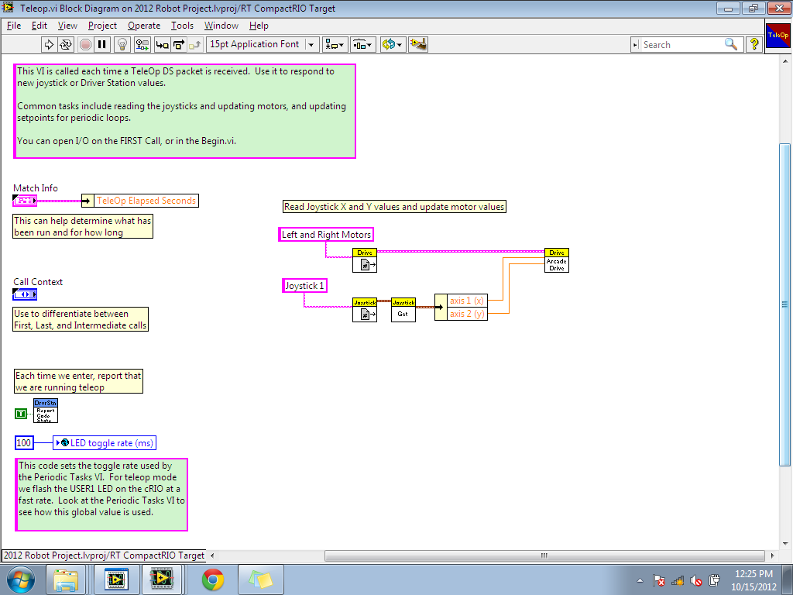
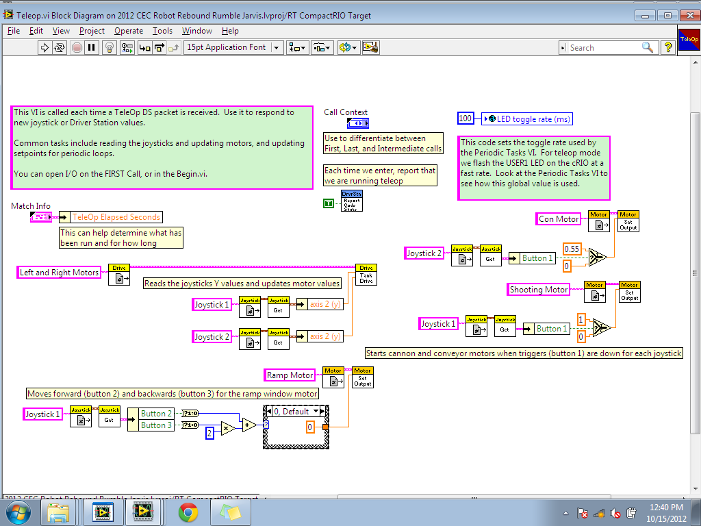

Teleoperator
This VI is probably the most important VI file for your LabVIEW project. Teleop is responsible for user commands, which means it is the VI granting you the ablility to control the robot. Without this VI, the robot will be mainly unresponsive. Here, you will be programming the user input section of your FRC Robot Project.
When you first open TeleOp it should look something like the picture on the right. The LabVIEW template has provided an example of how to write Arcade Drive robots.
{kind=link}
Arcade Drive, as oppose to Tank Drive, is when a steering motor is able to move in both the X and Y axis directions. Tank Drive is when the motor is only able to move in one motion.
In our 2012 Robot, we used five motors. Four of them were standard motors, and one of them a window motor (similar to a windshield wiper motor). Two of the standard motors were used for the Tank Drive (the Left and Right Motors), two others were used for the cannon and coveyor, and the window motor was used for a ramp mover. In the picture shown, we've added all the required user inputs for each motor.
{kind=link}
Remember, the orange constant is the strength of the motor. If it is at 1, then the motor will run at 100%. if it is at 0.55, then the motor will only run at 55% power.
The pink labels are the motor/joystick names, which were declared in the Begin VI.
The yellow and orange boxes are functions used from the WPI Robotics library.
The triangles are true/false, additive, and multiplicative conditions.
The two axis boxes determines what axis to use for tank steer. We used the y axis of two different joysticks.
The window motor is programmed a little differently. Since this motor can be in two different states, we used a case statement to set the output values. The default case (0) has the window motor at standby, case 1 has it move forward, and case 2 has it move backwards. If you have problem understanding this with the image alone, you can download our 2012 LabVIEW Robot Project on our homepage.